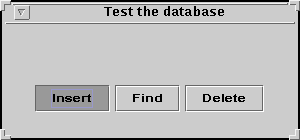

| Record | a data item that can be stored in a database |
| Methods | |
| getKey(): Key | Returns the key that uniquely identifies the record. |
| Key | an identification, or ``key,'' value |
| Methods | |
| equals(Key m): boolean | Compares itself to another key, m, for equality. If this key and m are same key value, then true is returned; if m is a different key value, then false is returned. |
As noted at the end of the case study, the development of class Database isn't quite perfect: With the current coding:
Figure 5 shows how to transform the descriptions of Record and Key into Java interfaces.
FIGURE 5: interfaces for Record and Key===============================
package DB;
/** Record is a data item that can be stored in a database */
public interface Record
{ /** getKey returns the key that uniquely identifies the record
* @return the key */
public Key getKey(); // NOTICE THE SEMICOLON---IT IS REQUIRED!
}
package DB;
/** Key is an identification, or ``key,'' value */
public interface Key
{ /** equals compares itself to another key, m, for equality
* @param m - the other key
* @return true, if this key and m have the same key value;
* return false, otherwise */
public boolean equals(Key m); // NOTICE THE SEMICOLON---IT IS REQUIRED!
}
ENDFIGURE=============================================================
These interfaces are placed in the same package (folder) as
class Database, and all three are compiled together.
(Say that the package is named, package DB, as used in
Figure 5 above. Of course this means that class Database
is slightly altered so that it reads
package DB;
public class Database
{ ... }
)
Note again how class Database refers to Record and Key in its fields and methods. Now, the Java compiler will understand that the names Record and Key are names of interfaces --- connection points --- to classes that will be written later and will implement the interfaces.
Here is a class diagram of package DB:
Now we are ready to use the database in an application. Perhaps we are building a cataloguing program for a library, so we wish to implement a database that holds records about books. We can write another package, say, package Library, that holds records about books and keys that are catalog numbers. Here are the codings of the records and keys:
FIGURE 6: implementing the database's interfaces==========================
package Library;
import DB; // needed so that we can refer to the Record interface
/** Book models a Library Book */
public class Book implements Record
{ private Key catalog_number;
private String title;
private String author;
private int publication_date;
/** Constructor Book constructs the book's record
* @param num - the book's catalog number
* @param a - the book's author
* @param t - the book's title */
public Book(Key num, String a, String t, int date)
{ catalog_number = num;
title = t;
author = a;
publication_date = date;
}
/** getkey returns the key that identifies the record
* @return the key */
public Key getKey() { return catalog_number; }
/** getTitle returns the book's title
* @return the title */
public String getTitle() { return title; }
/** getAuthor returns the book's author
* @return the author */
public String getAuthor() { return author; }
/** getDate returns the book's publication date
* @return the date */
public int getDate() { return publication_date; }
}
package Library;
import DB;
/** CatalogNumber models a Library-of-Congress-style id number,
* consisting of a letter sequence and a decimal number, e.g., QA76.884 */
public class CatalogNumber implements Key
{ private String letter_code; // the letter code, e.g., "QA"
private double number_code; // the number code, e.g., 76.884
/** Constructor CatalogNumber constructs a catalog number
* @param letters - the letter code, e.g., "QA"
* @param num - the decimal number code, e.g., 76.884 */
public CatalogNumber(String letters, double num)
{ letter_code = letters;
number_code = num;
}
/** equals returns whether the catalog number held within this object
* is identical to the catalog number held within c
* @param c - the other catalog number
* @return true, if this catalog number equals c; return false, otherwise */
public boolean equals(Key c)
{ String s = ((CatalogNumber)c).getLetterCode();
double d = ((CatalogNumber)c).getNumberCode();
return ( s.equals(letter_code) && d == number_code );
}
/** getLetterCode returns the letter code part of this catalog number
* @return the letter code, e.g., "QA" */
public String getLetterCode() { return letter_code; }
/** getNumberCode returns the number code part of this catalog number
* @return the number code, e.g., "76.884" */
public double getNumberCode() { return number_code; }
}
ENDFIGURE============================================================
Note that
Class Book, keeps its catalog number as an attribute and gives it away with its getKey method; the class knows nothing about how its key is coded, but this does not matter. The second class, CatalogNumber, uses a string and a double as its internal state. The latter's equal method holds particular interest: CatalogNumber's equals method must compare its string and its double to the string and double to the integer held in its argument, c. To do this, c must be cast into its underlying type, CatalogNumber, so that the getNumberCode and getNumberCode methods can be queried for c's string and its double:
public boolean equals(Key c)
{ String s = ((CatalogNumber)c).getLetterCode();
double d = ((CatalogNumber)c).getNumberCode();
return ( s.equals(letter_code) && d == number_code );
}
The reason for this extra work, is that the Java compiler needs some
help at determining exactly what type of object the ``Key'' c
really is. From the perspective
of the Java compiler, an object that is a Key
does not necessarily possess a getLetterCode
or getNumberCode method; the cast
tells the compiler that c is actually
a CatalogNumber, which does possess the two methods.
Unfortunately, we cannot avoid the cast by writing equals's header line as
public boolean equals(CatalogNumber c)because the parameter's data type would not match the description of equals in interface Key. We must live with this Java clumsiness.
Now, we can build a database that holds Book records:
Database db = new Database(1000); // see Figure 4 in the Case Study
CatalogNumber k = new CatalogNumber("Z", 2.5);
Book b = new Book(k, "Great Expectations", "Charles Dickens", 1860);
boolean success = db.insert(b); // saves (the address) of object b in db
Record find_me = db.find(k); // returns the address of the record whose key
// is equal to k. Of course, this will be the address of b
System.out.println( ((Book)find_me).getTitle() ); // the cast tells the
// Java compiler that it's OK to getTitle from the record
Figure 7 shows the card catalogue's class diagram.
FIGURE 7: class diagram with interfaces================================== ENDFIGURE==============================================================The diagram shows that Database is coupled only to the two interfaces and not to the classes that implement the interfaces. This is a clear signal that other classes of records and keys can be used with class Database.
Another interesting feature of the structure is that class Book is not coupled to class CatalogNumber! This means that other forms of keys can be used to identify book objects.
We take for granted that the numeric primitive types are related by a subtyping relationship: int is a subtype of double, written int <= double, because an integer can be used in any situation where a double is required, for example: double d = 4 is an acceptable initialization. Similarly, if a method expects an argument that is a double, as in
public double inverseOf(double d)
{ return 1.0 / d; }
We can send the method an
integer, e.g., inverseOf(3).
Subtyping relationships simplify our programming;
in particular, cumbersome cast expressions are not required.
For example, it is technically correct but ugly to write
double d = (double)4, and thanks to subtyping, we may
omit the cast.
In addition to primitive data types, there are object or reference data types, e.g., JFrame is a reference data type. There are subtyping relationships between reference types. For example, if we write the class, public class MyFrame extends JFrame, then a new subtyping relationship is created: MyFrame <= JFrame. Similarly, when a class implements an interface, e.g., public class Book implements Record, a subtyping relationship is created, Book<= Record.
As with primitive data types, subtyping relationships between reference types establish compatibility. For example, if MyFrame extends JFrame, then a MyFrame object can be used in any context where a JFrame object is expected. An example is
public void resetTitle(JFrame f, String s)
{ f.setTitle(s); }
...
MyFrame my_view = new MyFrame();
resetTitle(my_view, "Hello");
Method resetTitle expects an argument that is a JFrame,
because it invokes JFrame's setTitle method.
But the actual parameter, my_view is acceptable because its
data type is a subtype of JFrame, implying that my_view
also has a setTitle method.
Database db = new Database(1000);
CatalogNumber k = new CatalogNumber("Z", 2.5);
Book b = new Book(k, "Great Expectations", "Charles Dickens", 1860);
db.insert(b);
the database method, insert, expects arguments of types
Record but it operates properly with ones
of type Book
because of the subtyping relationships.
---- ----
Database db ==| a1 | CatalogNumber k ==| a3 |
---- ---- ------ ----
Book b ==| a4 | boolean success ==| true |
---- ------
a1 : Database
---------------- ----
| Record[] base ==| a2 |
| --- ----
| int count ==| 1 |
| ---
a2 : Record[4]
--------------------
| 0 1 2 ...
| --------------------------
| | a4 | null | null | ...
| -------------------------
a3 : CatalogNumber a4 : Book
----------------- -------------------
| String letter_code ==| "abc" | | Key k ==| a3 |
| double number_code ==| 2.5 | | String title ==| "Great Expectations" |
| | ----------------------
| String author ==| "Charles Dickens" |
| -----------------
| int date ==| 1860 |
The diagram reminds us that every object in storage is labelled
with the name of the class from which the object was constructed.
This is the run-time data type of the object. The diagram
also illustrates that run-time data types are distinct from the
data types that appear in assignments. For example,
the object at address a4 retains its run-time data type,
Book, even though it was assigned into an element of an array
declared to hold Records. (Look at a2's run-time data
type.) The situation is acceptable because of the subtyping relationship.
Consider the following statements, which build on the above:
Record find_me = db.find(k); System.out.println( ((Book)find_me).getTitle() );The first statement extracts from the data base the record whose key equals k, that is, a4 is assigned to find_me. But we cannot say, immediately thereafter, find_me.getTitle(), because variable find_me was declared to have data type Record, and there is no getTitle method listed in interface Record. The problem is that the data base method, find returns an object whose data type is Record.
This is frustrating to the programmer, who knows that db is holding Book objects, but Java's compiler and interpreter are not intelligent enough to deduce this fact. Therefore, the programmer must write an explicit cast upon find_me, namely, (Book)find_me, to tell the Java compiler that find_me holds an address of an object whose run-time type will be Book. Only then, can the getTitle message be sent.
If the programmer encounters a situation where she is not certain herself what is extracted from the database, then the instanceof operation can be used to ask the extracted record its data type, e.g.,
Record mystery_record = db.find(mystery_key);
if ( mystery_record instanceof Book)
{ System.out.println( ((Book)mystery_record).getTitle() ); }
else { System.out.println("unknown record type"); }
Stated precisely, the phrase, EXPRESSION instanceof TYPE,
returns true exactly when the run-time data type attached to the
object computed by EXPRESSION is a subtype of
TYPE.
You can read more about interfaces in Chapter 9 of the CIS200 notes: http://www.cis.ksu.edu/~schmidt/CIS200/
The API documentation is located nearby:
www.cis.ksu.edu/~schmidt/300s05/Lectures/DatabaseExample/DB/package-summary.html and
www.cis.ksu.edu/~schmidt/300s05/Lectures/DatabaseExample/Library/package-summary.html
At the same location, http://www.cis.ksu.edu/~schmidt/300s05/Lectures/DatabaseExample , there is a test application, package TestTheDatabase, that uses package DB to build a different application with a graphical user interface.
The application builds and saves ``BasicPerson'' records about people (A BasicPerson records holds a key, a name, and some personal information. The key objects are ``StringKey''s, which hold a string that acts as a person's unique ID.)
To start the application, type
java TestTheDatabase.StartYou will see a frame with three buttons that you can push:
When you press Insert, you will be asked to invent a string that will be used to construct a StringKey object. Then, you will be asked to type a person's name and some personal information. The StringKey object, the name, and the information are inserted into a newly constructed BasicPerson object, which is stored in the database.
Now, press Find and see what happens---you are asked to type a string that can be used to construct a StringKey object and do a lookup in the database.
The example shows how package DB is used in a completed application. The example also shows how a new collection of classes implement interface Key and interface Record.
The API documentation for the application is at www.cis.ksu.edu/~schmidt/300s05/Lectures/DatabaseExample/TestTheDatabase/package-summary.html